UX工作坊專案
專案目標
打造2小時的「給UX學習入門者的學習工作坊」，將UX的知識融入課程中，並透過遊戲化的方式，引導學員做中學。
為找出UX初學者的核心學習需求以及讓工作坊具差異化設計，團隊邀請6位受訪者進行訪談。
訪談分為二階段，需求訪談以及POC驗證。
需求訪談
設計訪綱時針對受訪者：
- 參與工作坊的經驗
- 學習UX的動機
- 期待能帶走甚麼收穫
以上三大核心要素做詢問，並期望達成：
- 工作坊活動結構完整，達到學習和實作的平衡
- UX的知識傳遞能符合初學者的需求
訪談形式為2對1訪問，1人主訪1人紀錄，
每次訪談30分鐘，訪談結果利用親合圖法整理。
利用親合圖法抓到3個主要之節點，需求、經驗、期待，
並從訪談過程中團隊凝聚原型提案方向：
- 簡單易懂
- 多輪、玩中學、引導角色
- 有競爭關係
- 跟現實生活關聯
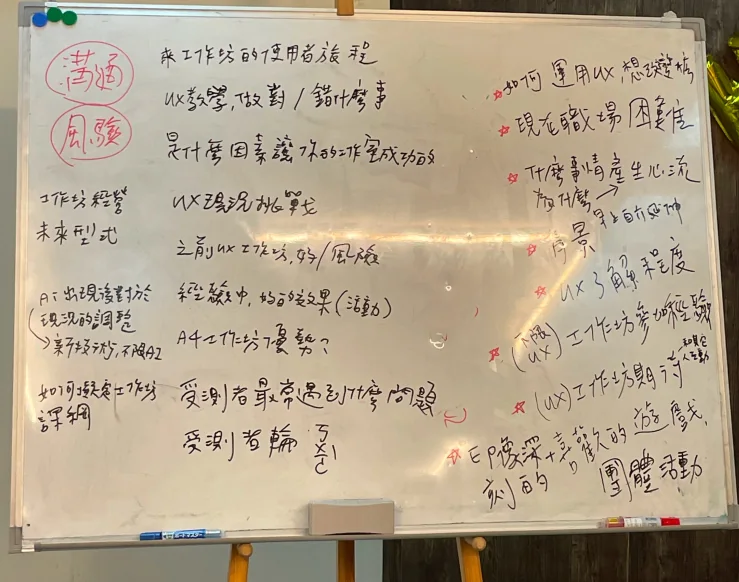
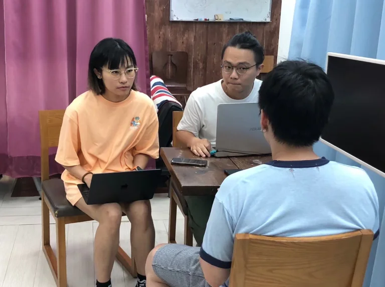
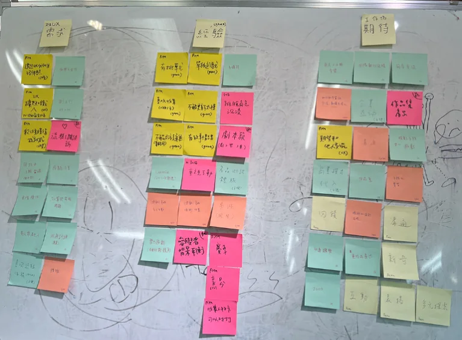
原型提案
根據提案方向，團隊總共提出3個不同的原課程設計，將UX知識如訪談、問卷、CRM等觀念帶入遊戲過程中。
猜猜我是誰
UX價值：
市場TA的探索以及最後產出CRM的清晰輪廓。
透過訪談逐步清晰市場的背後的認知、情緒、行為。
遊戲方式：
我們分成3個受訪者，學員分成3個Team，分成3輪去訪談，並對2位受訪者有標籤。
每一輪都有一個關主都會給一個題目，3個小組針對題目進行答辯並且給予統一答案，
然後關主再公布答案，並且給予對錯以及下一輪的受訪重點提示。
- 訪談
- →
- 3組互相答辯
(釐清真實市場) - →
- 給予即時回饋
- 對答案
(再精修訪談內容以及方向) - →
- 最終答案
大富翁
UX價值：
根據市場變化(機會命運等條件)，帶入真實的商業情境，
並且讓受測者初步了解UX工具可能帶來的好處以及結果。
遊戲方式：
每一輪都會有機會、命運以及道具卡，代表市場變動以及機會，
並且道具卡分別代表UX工具(讓受測者明白可能那些工具再哪個步驟以及階段會帶來怎麼樣的好處)，
最後可以產出類似的總營收以及報表等量化形式，看看哪些步驟可以再做檢討或深入學習。
- 擲骰子
- →
- 抽卡
- →
- 面對機會/命運(市場變動)，
並且決定是否使用道具卡
(UX工具) - →
- 最終結果
AB寵物店
UX價值：
經過探索、假設、驗證的具體UX流程
遊戲方式：
學員扮演寵物推銷員，分別透過訪問得知喜歡的寵物輪廓，並且假設(自己創造動物)，
最終要賣給市場(驗證自己創造的動物喜愛度)
- 探索
(學員扮演銷售員) - →
- 假設
(自己創造動物) - →
- 訪談
- 驗證
(賣給不同市場) - →
- 賣出符合需求的寵物，
營收最高的寵物店就是最終贏家
POC驗證：質化訪談+量化統計
根據原型我們再次進行POC的概念驗證，透過量化以及質化的方式，去蕪存菁的將各遊戲中的優點保留並濃縮。
量化分析：籌碼分布
如果有十枚代幣，你會怎麼分配到這三個遊戲？
| AB寵物店 | 大富翁 | 猜猜我是誰 | |
|---|---|---|---|
| Amanda | 2 | 3 | 5 |
| 子琪 | 0 | 6 | 4 |
| Lynn | 3 | 4 | 3 |
| Rena | 1 | 6 | 3 |
| Rita | 3 | 2 | 5 |
| 凱倫 | 4 | 2 | 4 |
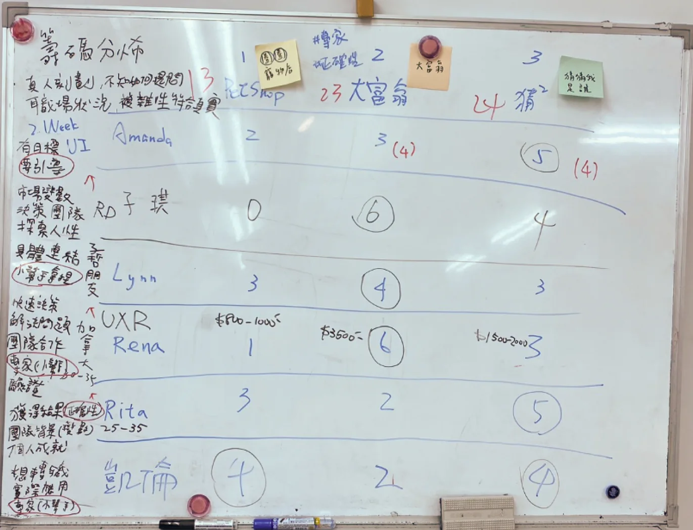
質化訪談
大富翁
可以模擬快速決策商業(可以設定不同的產業類型)環境，並快速解決問題。
希望可以得到一些小小的獎勵。
進行的方式是有先進行教學再進行遊戲。
A/B寵物店
猜猜我是誰
最多提及Tag
POC驗證再次證明需求訪談中跟現實生活關聯以及多輪、玩中學、引導角色的概念，
此外，團隊亦發現主題性對於工作坊學習的模式是非常重要的。
工作坊設計：UX顧客讀心術遊戲工作坊
遊戲介紹
你今天是個建商，資源有限的情況下，如何將手上僅有的土地發揮最大的價值？
在面對不同的客群(市場)的需求以及背後所代表的收益，該如何合理的分配以及規劃才能使利益最大化呢？
工作坊流程
學員將透過UX常見的訪談技巧(專業能力深入練習)，從需求、預算等方面建構出對於客群(市場)的樣貌，
並透過自身建案(商案核心價值)的設計爭取不同市場的最大利益。
一共進行兩輪的訪談，過程中讓學員就第一輪的提案做POC的驗證，迭代後再次進行第二輪訪談並修正提案。
最後重點回顧將過程中使用到的UX技巧、觀念，做一次統整的說明並對學員工作坊的提案做回饋。
- 破冰
(5mins) - →
- 工作坊說明
(10mins) - →
- 小組擬訪綱
(15mins) - →
- 小組訪談
(13*2=26mins) - →
- 整理提案
(15mins) - →
- 市場驗證
(5mins) - →
- 重點回顧
(10mins)
小組擬訪綱 → 市場驗證：重複2輪
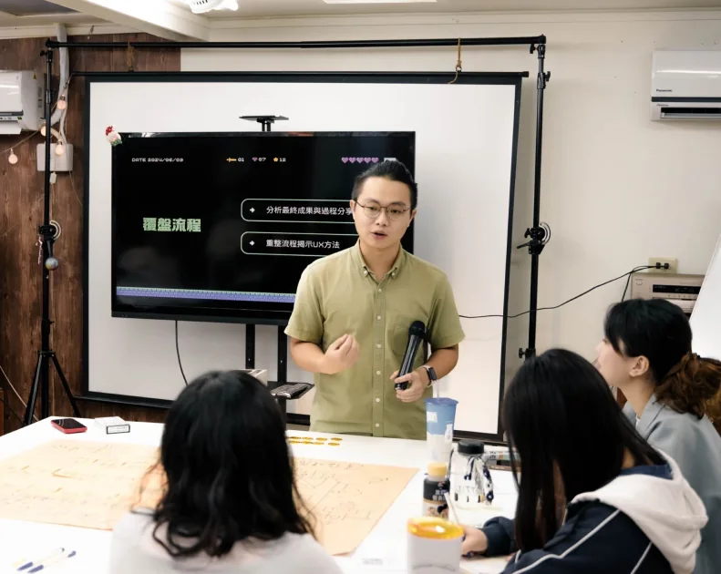
市場代表
團隊透過ChatGPT，產生4種不同的消費者樣貌，背後各有痛點以及需求。
遊戲中也模擬現實中市場規模不同的情況(真實職場環境帶入)，設計讓每個客群的預算皆不同，期望學員能夠理解資源分配的重要性。
| 人物 | 需求 | 價位 | 地點 | 屋齡 |
|---|---|---|---|---|
| 單身 | 交通方便，靠近地鐵或公交站；生活機能良好，有超市、餐廳和運動場所；小戶型（1-2房），易於打理；低管理費；有健身房或便利設施 | NT$600萬 - NT$800萬 | 台北市中心區或新北市板橋區 | 10年以下 |
| 人物 | 需求 | 價位 | 地點 | 屋齡 |
|---|---|---|---|---|
| 情侶 | 生活便利，靠近商業區和娛樂場所；適合未來家庭發展；中等戶型（2-3房）；周邊有咖啡廳、餐廳、購物中心；升值潛力大 | NT$1000萬 - NT$1300萬 | 台北市信義區或台中市七期重劃區 | 5年以下 |
| 人物 | 需求 | 價位 | 地點 | 屋齡 |
|---|---|---|---|---|
| 家庭夫妻 | 空間大（3-4房），環境安靜，有公園或綠地；學區優秀，周邊有幼兒園、小學；社區設施完善（如泳池、健身房、活動中心）；安全性高 | NT$1500萬 - NT$2000萬 | 新北市新店區或桃園市龜山區 | 15年以下 |
| 人物 | 需求 | 價位 | 地點 | 屋齡 |
|---|---|---|---|---|
| 投資客 | 高出租率，需求量大；升值潛力高的區域；多功能用途（住宅或商業）；市場需求高；維護成本低；可快速轉手 | NT$800萬 - NT$1000萬 | 台北市大安區或台中市西屯區 | 20年以下 |
學員回饋&Takeway
質化回饋
從質化問卷可得知，學員對於訪談技巧提升以及與UX知識皆給予正面評價。
此外，適時的引導(小天使)以及事先說明任務情境，對於學員來說也是十分重要，除了能夠有方向的練習，也能在當下明白自己有沒有在進步得到即時的反饋。
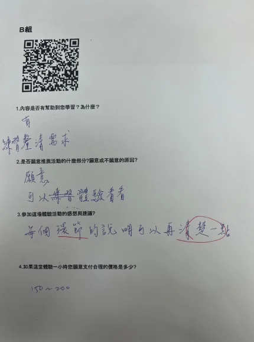
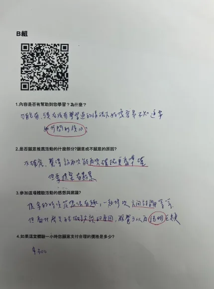
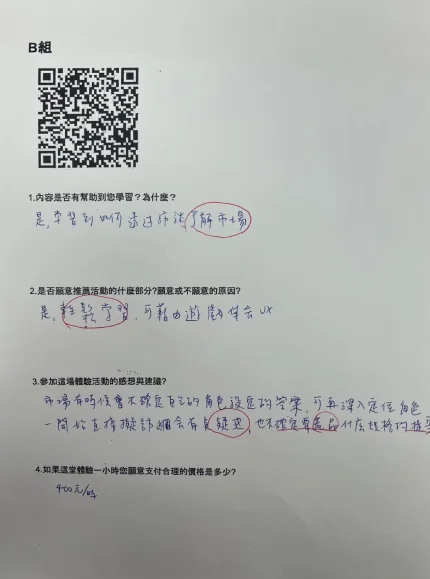
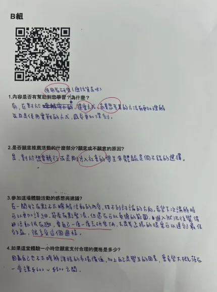
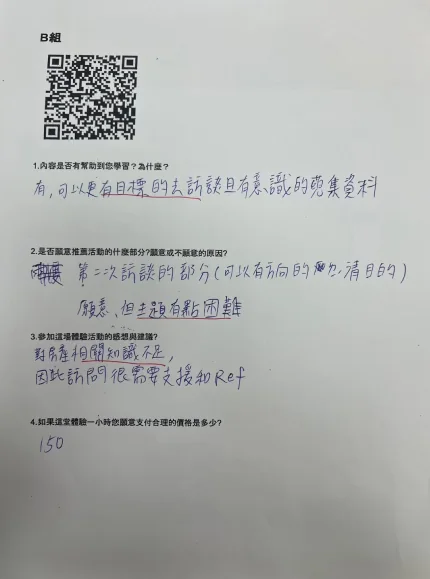
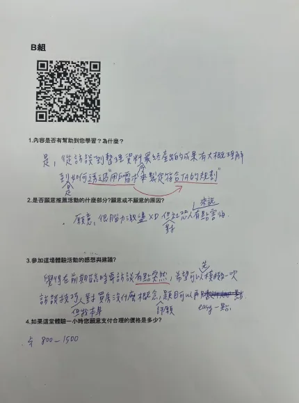
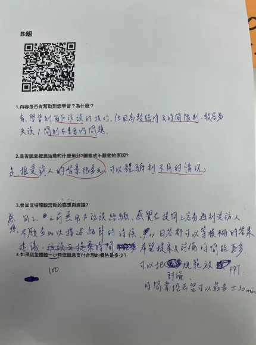
量化回饋
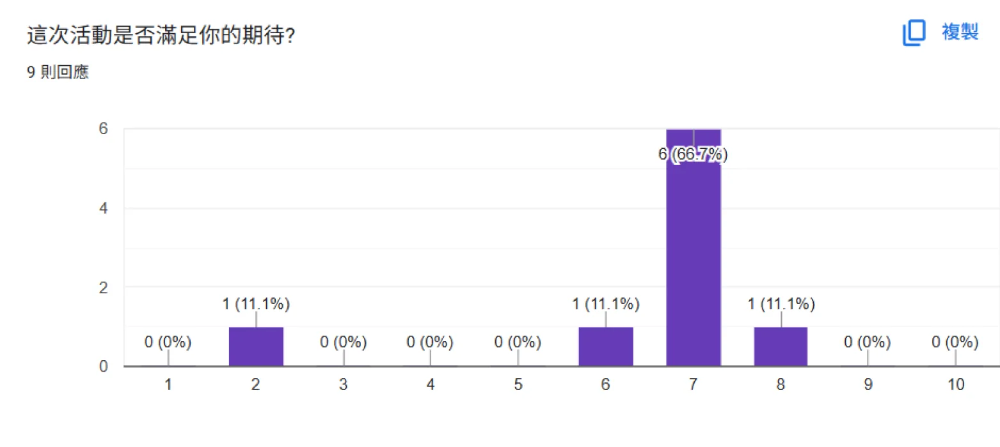
活動是否符合期待平均落在7-8分，代表在遊戲內容設計上符合學員的預期。
然而仍有2分的回饋，可能代表此活動沒有對到該學員的預期或者可能是先驅指標。
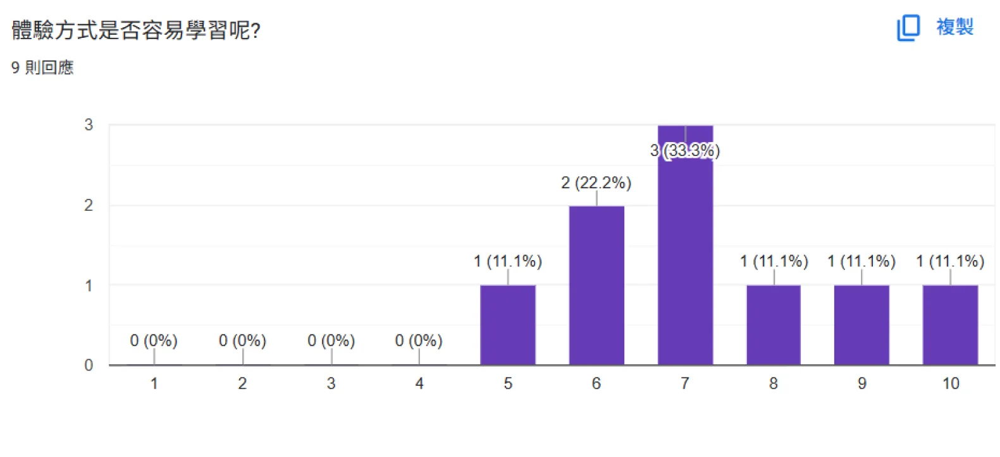
該回饋的高評分，可以回應我們在設計遊戲充分考慮到量質化指標中"主題性、玩中學"的結論。
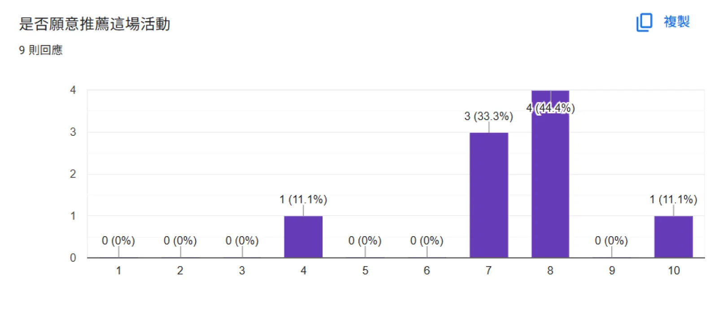
學員的推薦率很高，代表工作坊的內容、以及整體節奏掌握有符合學員預期。
Takeway
同時身為UX學習者又要扮演UX授課者的角色，原本認為透過自己的痛點應該可以輕易的轉化為工作坊設計。
然需求是多變的，僅能透過一次一次的訪談，不斷的修正試錯，才能更接近使用者核心的需求。
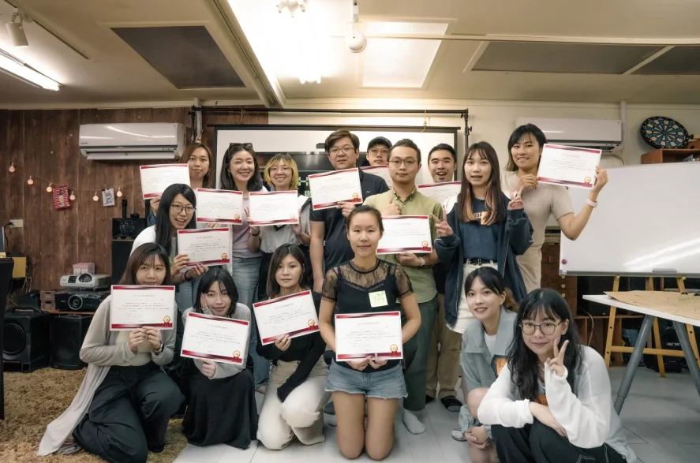